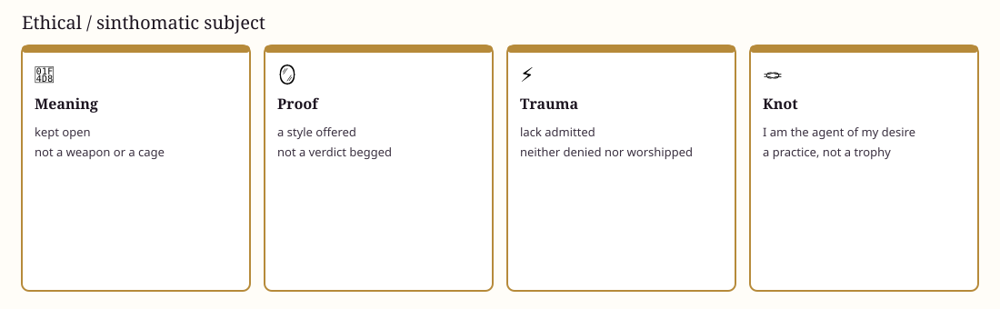

Sinthomatic subject
The ethical subject
Not a fifth pathology. Accept lack, stop using the Other as a guarantee, take responsibility for unconscious desire.
Not moralism. An ethic of desire: I will not outsource my being, nor cover lack by making someone else into a scene, nor freeze life into a perfect rule.
